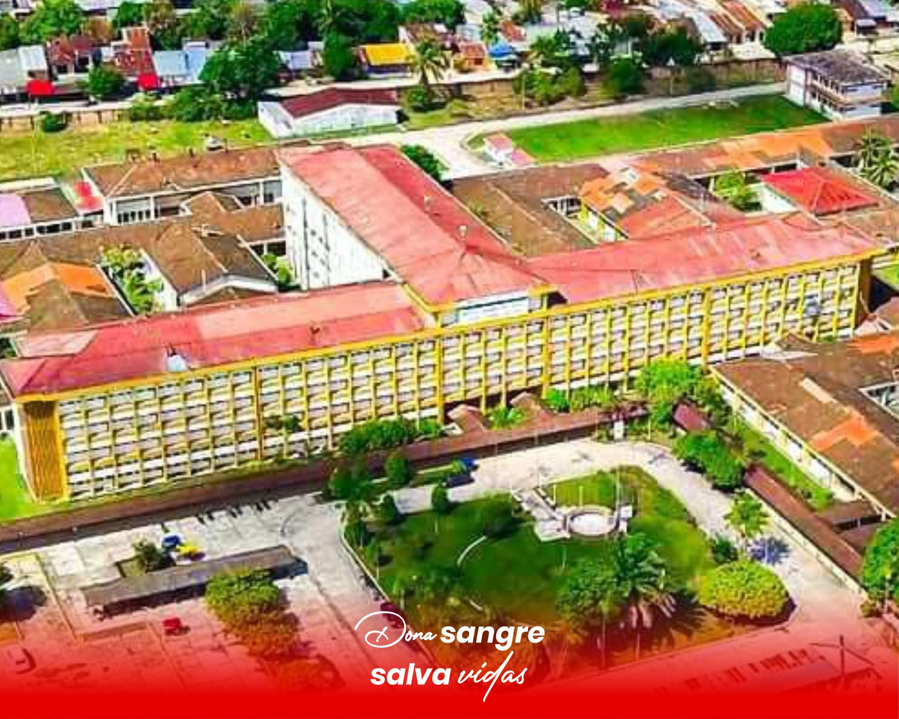
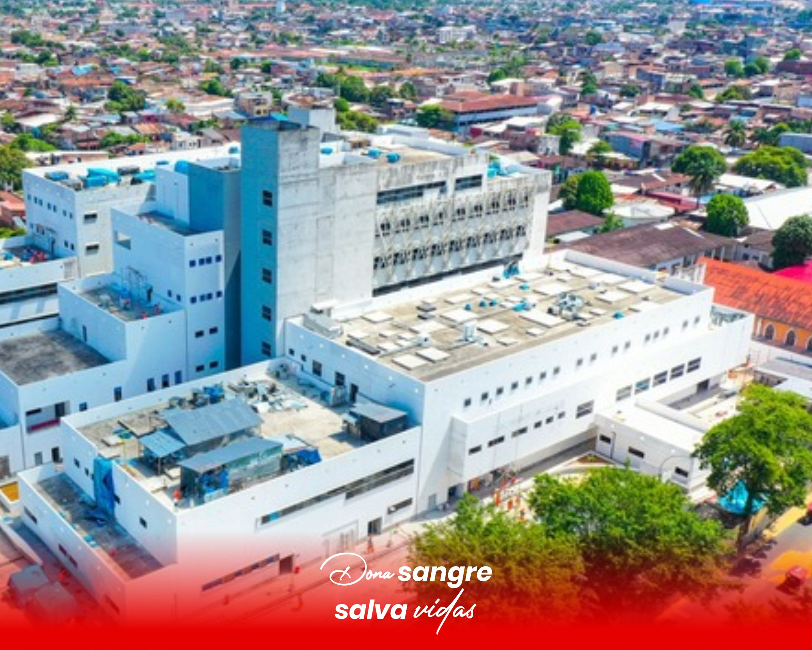
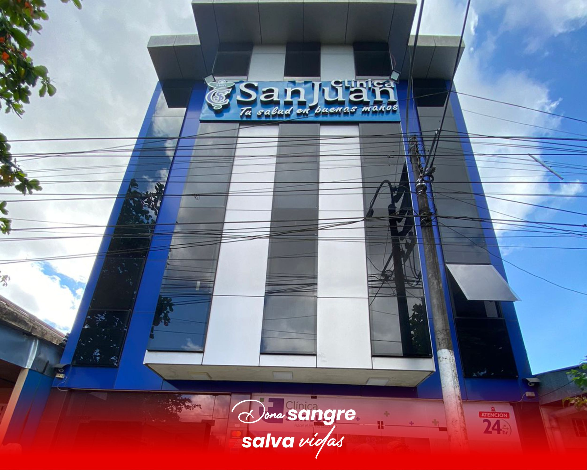

Horarios y Ubicaciones de Donación
Visítanos en cualquiera de nuestras ubicaciones durante los horarios establecidos para hacer tu donación de sangre y ayudar a quienes más lo necesitan.

Centro Hemodador Regional de Loreto
Garcia Saenz 332, Iquitos 16002
Contacto:+51 939 373 496
Horarios: Lunes a Sabado: 7:00 AM - 7:00 PM

Hospital Regional de Loreto “Felipe Santiago Arriola Iglesias”
28 De Julio S/N, Iquitos 16004
Contacto: (065) 252747
Horarios: Lunes - Domingo 24Hs

Hospital Iquitos “Cesar Garayar Garcia”
Cornejo Portugal 1710, Iquitos 16006
Contacto: (065) 263749
Horarios: Lunes - Domingo 24Hs

Clínica San Juan
Calle. Ricardo Palma 838
Contacto: +51 965 988 191 - admision@smgsanjuan.pe
Horarios: Lunes - Domingo 24Hs